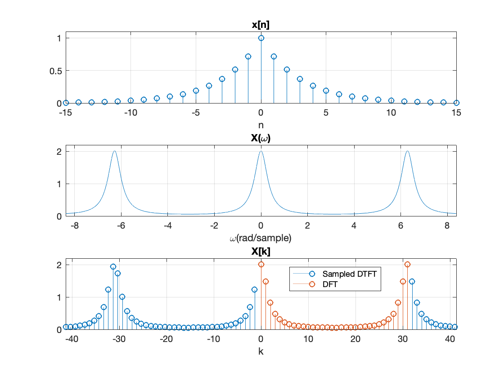
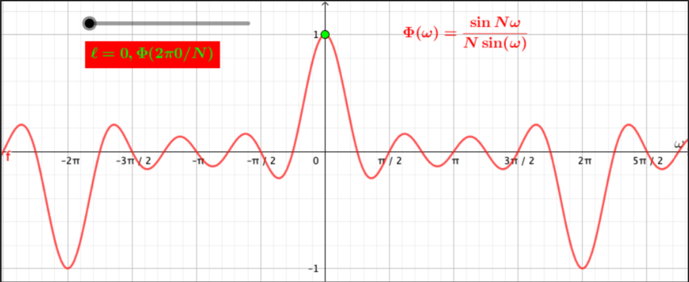
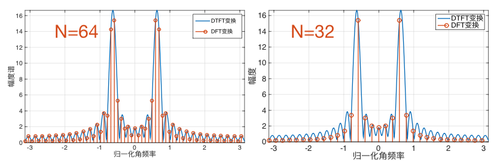
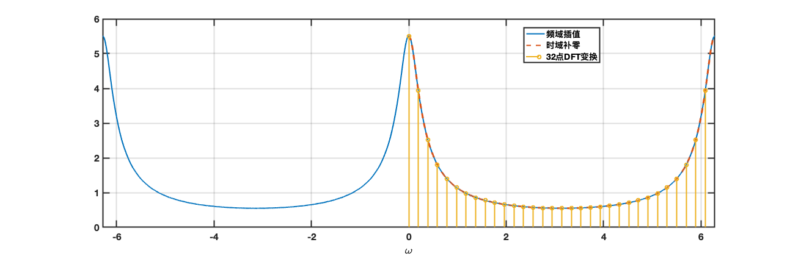

4. 离散傅里叶变换¶
在实际应用中，数字信号处理器中会大量的使用离散时间信号的频率分析，即将时域序列转换成等价的频域表达。在上一章中，我们学习了了利用离散时间傅里叶变换来分析离散时间序列（信号）的频谱。但是，离散时间傅里叶变换往往是频率的连续函数，所以计算机直接处理连续的函数是非常不方便的。我们知道，DTFT 变换等价于将连续时间傅里叶变换在时间轴上均匀采样。那么，在本章中，我们将进一步在频率上对序列的 DTFT 变换进行采样，从而得到时域和频域都离散的频域表达，那么这个过程我们称为离散傅里叶变换，即 DFT。
序列经过 DFT 变换后的到的频域表达仍然是离散的，因此这种频域分析方法更适用于计算机或者数字处理器，在实际应用中被广泛的使用。
4.1. 从 DTFT 到 DFT¶
4.1.1. DTFT 回顾¶
根据上一章的内容，如果离散时间信号能量有限或者是绝对可和的，那么其离散时间傅里叶变换是关于频率的连续且周期的函数。
\begin{equation} X\left(e^{j \omega}\right)=\sum_{n=-\infty}^{\infty} x[n] e^{-j \omega n} \label{eq:dtft} \end{equation}
我们知道，DTFT 变换是对CTFT 变换在时间上的等间隔抽样。离散时间信号$x[n]$可以写成
其中，$F_s$为对连续时间信号$x(t)$的采样频率。令$\omega=\Omega/F_s$，对$x_T(t)$计算连续傅里叶变换
因此，公式\eqref{eq:dtft}实际上就是对$x_T(t)$的连续时间傅里叶变换在时间上的采样（第二个等式中的括号部分）。
4.1.2. 对 DTFT 变换的频率采样¶
由公式\eqref{eq:dtft}定义的DTFT 变换关于频率$\omega$是连续的，不便于计算机直接处理，我们需要进一步对频率离散化。那么，离散傅里叶变换（DFT）就是一种时间和频率上都离散的正交变换，它是通过对 DTFT 变换直接在频域进行等间隔采样来得到。
首先，我们知道 DTFT 变换是周期为$2\pi$的连续周期函数。对于长度为$L$的序列$x[n]$的 DTFT 变换，我们将频率$\omega$以$\frac{2\pi}{N}$等间隔离散化，得到等间隔的频率样本$\omega_{N}[k]$
那么定义$X[k]$为 DTFT 变换$X\left(e^{j \omega}\right)$的第$k$个样本点，带入到公式\eqref{eq:dtft}中，可以得到
其中第二个等式是因为序列$x[n]$的有效长度为$N$，且$ W_{N} = e^{-j 2 \pi / N} $为旋转因子。

注意
对 DTFT 变换在频域上的等间隔抽样，对时域中原序列会造成什么影响呢？
同时域采样一样，定义采样序列$p_N(\omega) = \sum_{k=-\infty}^{\infty} \delta (\omega - 2k\pi /N)$。那么，将频域采样前后的关系写为
其中$X_p(e^{j\omega})$为$X[k]$的连续形式，表达的信号是等价的。那么对上式进行 IDTFT 变换，就可以得到频域采样后时域的信号，这里记作$\tilde{x}[n]$
上式最后一个等式的求和符号的含义就是，将原信号$x[n]$以$N$为长度，周期延拓。也就是说，如果对 DTFT 变换的频率进行离散化，会导致时域上信号的周期延拓，幅度也会变为原来的$N/2\pi$倍。这个结论与对信号在时域进行采样，频域周期延拓是类似的。
当序列$x[n]$长度$L$大于一个周期内频率采样的点数$N$的时，即$L>N$，在频率上的采样会导致时域序列混叠；而当序列$x[n]$长度$L\leq N$，就不会在时域发生混叠问题，此时只需要截取从0到$L-1$内的序列，就能无失真重建出原始时域序列。这个结论与采样定理的重建过程也是类似的。
下面我们将根据这些结论来推导出DFT变换的形式。
4.1.3. 从 DTFT 变换到 DFT 变换¶
当序列$x[n]$的长度$L=N$时，对该序列的 DTFT 变换的频率等间隔采样。
从时域到频域：
\begin{equation} X[k] =\sum_{n=0}^{N-1} x[n] W_{N}^{kn}, \quad k=0,…,N-1 \label{eq:dft} \end{equation}
从频域到时域： 根据公式\eqref{eq:prove}
因为$L=N$，时域反变换序列没有混叠，所以在一个周期内$[0,N-1]$， $$ \tilde{x}[n] = \frac{N}{2\pi}x[n], \quad n = 0,…,N-1 $$
联合上面两个式子，我们可以得到如下等式
\begin{equation} x[n] = \frac{1}{N} \sum_{k=0}^{N-1} X[k] W_N^{-kn} \quad n=0,…,N-1 \label{eq:idft} \end{equation}
由此可见，对于长度为$N$的序列$x[n]$来说，等式\eqref{eq:dft}和等式\eqref{eq:idft}是一个变换对。这个变换对是有限长度、且是离散的变换，在很多课本中，这种类型的变换称为“有限长变换”。
这里，我们将公式\eqref{eq:dft}称为离散傅立叶变换（DFT），公式\eqref{eq:idft}为DFT变换的逆变换，称为逆离散傅立叶变换（IDFT）。
注解
对于长度为$N$的序列$x[n]$的DFT和IDFT变换如下：
DFT变换：
\begin{equation} X[k] =\sum_{n=0}^{N-1} x[n] W_{N}^{kn}, \quad k=0,…,N-1 \end{equation}
IDFT变换：
\begin{equation} x[n] = \frac{1}{N} \sum_{k=0}^{N-1} X[k] W_N^{-kn}, \quad n=0,…,N-1 \end{equation}
DFT变换实际上就是对DTFT变换的频率进行等间隔采样的版本。
4.1.4. 从DFT变换到DTFT变换¶
频域插值¶
我们在前一章节已经学习了信号的采样定理。如果采样频率满足奈奎斯特频率，通过线性插值函数（Sinc）可以将采样后的离散时间信号无失真还原成原始的模拟信号。那么，我们如果对序列的DTFT变换的频率进行采样，得到频域中离散的序列，那么如何从这些离散的频率点重建原始连续且周期的DTFT变换呢？
根据DFT和IDFT变换的定义，若已知序列$x[n]$的DFT变换$X_N[k]$，
另外，根据DTFT变换的定义
定义
我们可以很容易验证函数$\Phi$满足下面的条件

最后，我们可以将$X(e^{j\omega})$和$X_N[k]$的关系写成如下形式
\begin{equation} X\left(e^{j \omega}\right)=\sum_{k=0}^{N-1} X_N[k] \Phi(\omega-2 \pi k / N) \label{eq:dft2dtft} \end{equation}
这说明序列$x[n]$的DTFT变换$X(e^{j\omega})$可以通过对序列的DFT变换进行插值得到，插值方式如公式\eqref{eq:dft2dtft}。
时域补零¶
DFT变换是对DTFT变换的频率进行采样得到的，如果我们已经计算出一个序列的$N$点DFT变换$X_N[k]$，就可以通过公式\eqref{eq:dft2dtft}重建出连续的DTFT变换$X\left(e^{j \omega}\right)$。
另外一方面，正是因为DFT变换是DTFT变换频域的采样，DFT变换的每个样本点对应的归一化频率为$2\pi k/N$。当DFT变换的点数$N$越高，DTFT变换频域采样的频率就越高，所以更逼近连续的DTFT变换。也就是说，我们可以通过不断增大DFT变换的长度$N$来逼近DTFT变换。令$x_N[n]$为对长度为$L<N$的序列$x[n]$做$N$点DFT变换，然后再反变换到时域的序列，那么
这个式子的结论就是，对原序列$x[n]$末尾补零，加长序列长度，然后做DFT变换，对应于在DTFT变换的频域提高采样频率。
例子：DFT变换是DTFT变换的频域采样¶
考虑截断余弦序列
$$ x[n]=\cos (2 \pi 0.1 n), \quad n \in{0, \ldots, 31} $$
该序列长度为$L=32$，分别对该序列计算64点和32点DFT变换，可以得到$x[n]$的DFT变换：

图中，蓝色的曲线为序列$x[n]$的DTFT变换，很明显，DFT变换实际上就是DTFT变换频域上的等间隔采样，采样间隔等于$2\pi/N$，其中$N$为DFT变换的长度。当DFT变换的长度$N=64$，采样间隔等于$2\pi/64$；当DFT变换长度为$N=32$时，采样间隔等于$2\pi/32$。所以，从实验结果可以看出，DFT变换的长度越长，频域的样本点越密集。
例子：DTFT变换的两种近似¶
下面我们通过一个例子来说明通过时域补零和频域插值方式来逼近原始序列DTFT变换的过程。
考虑下面的序列：
分别通过时域补零和频域插值逼近该序列的DTFT变换，具体实现参见Python代码。

4.1.5. DFT 变换的矩阵形式¶
DFT变换和逆变换是针对有限长序列$x[n]$的变换。我们将这个有限长序列$x[n]$写成向量形式
$x[n]$为向量$\mathbf{x}$中的第$n$个元素，$n\in [0,N-1]$。
同时定义矩阵$\mathbf{D}_N \in \mathbb{C}^{N\times N}$
然后，我们可以将DFT变换写成如下矩阵的形式
\begin{equation} \mathbf{X}=\mathbf{D}_{N} \cdot \mathbf{x} \label{eq:dft_matrix} \end{equation}
这里$\mathbf{X} \in \mathbb{C}^{N}$为DFT变换后的向量，其中$X[k]$为它的第$k$个元素，$k\in [0,N-1]$。
很容易，我们可以证明矩阵$\mathbf{D}_N $满足如下等式：
$$ \mathbf{D}_N ^H \mathbf{D}_N = \text{Id} $$
其中$\mathbf{D}_N ^H $表示矩阵$\mathbf{D}_N $的共轭转置。
例子¶
计算序列$x[n] = {1, 0, 1, 2}$的DFT变换。
4.2. DFT 变换的性质和定理¶
前面的章节，我们已经讨论了DFT变换本质上是DTFT变换在频域的等间隔采样，可以推断DTFT变换的性质和定理，DFT变换都能继承。为了阐述清楚DFT定理和DTFT定理之间的关系，我们再回顾一下序列的DFT变换和DTFT变换的关系：
DFT